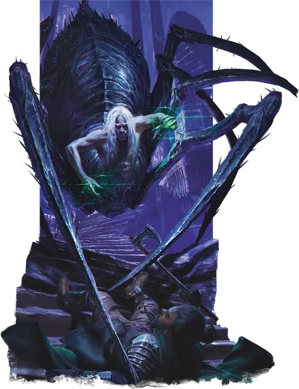

Драук
Drider
Большое Чудовище, Хаотичное Злое

Класс Защиты 19 Инициатива +4 (14)
Хиты 123 (13к10 + 52)
Скорость 30 футов, Лазания 30 футов
| мод | спас | ||
|---|---|---|---|
| СИЛ | 16 | +3 | +3 |
| ЛОВ | 19 | +4 | +4 |
| ТЕЛ | 18 | +4 | +4 |
| мод | спас | ||
|---|---|---|---|
| ИНТ | 13 | +1 | +1 |
| МДР | 16 | +3 | +3 |
| ХАР | 12 | +1 | +1 |
Чувства Тёмное зрение 120 футов, пассивное Восприятие 16
Языки Подземный, Эльфийский
Опасность 6 (2 300 опыта; БВ +3)
Особенности
Паучье лазание. Драук может лазать по сложным поверхностям, включая потолки, без совершения проверок характеристик.
Чувствительность к солнечному свету. Находясь на солнечном свету, Драук совершает с Помехой все проверки характеристик и броски атаки.
Хождение по паутине. Драук игнорирует ограничения перемещения, вызванные паутиной, и знает точное местоположение всех других существ, находящихся в контакте с той же паутиной.
Действия
Мультиатака. Драук совершает три атаки Передней лапой или Ядовитой вспышкой в любой комбинации.
Передняя лапа. Бросок рукопашной атаки: +7, досягаемость 10 фт. Попадание: 13 (2к8 + 4) Колющего урона.
Ядовитая вспышка. Бросок дальнобойной атаки: +6, дистанция 120 фт. Попадание: 13 (3к6 + 3) урона Ядом.
Бонусные действия
Магия Паучьей Королевы (Перезарядка 5–6). Драук сотворяет заклинания Тьма, Огонь фей или Паутина, не нуждаясь в Материальных компонентах (заклинательная характеристика — Мудрость, Сл спасброска заклинаний 14).
Бонус мастерства +3
Среда обитания Леса, Подземье
Сокровища Оружейные
Драук
Паукообразный охотник из Подземья
Драуки сочетают в себе черты дроу и гигантских пауков. Злая богиня Лолт превращает своих последователей в этих чудовищ в качестве благословения или проклятия. Как правило, те становятся её фанатичными слугами, однако некоторые из них оказываются подавлены произошедшей трансформацией и живут лишь ради потакания своим паучьим инстинктам.
Порой из-за божественного гнева или других магических причин драуками может стать население небольшого поселения. В других случаях они могут быть естественной частью мира. Большинство из них обитают под землёй или в лесных чащах, приспособленных для их паучьей жизни.
Произошедшие от других рас драуки встречаются крайне редко. Совершите бросок по таблице «Превращение в драука» для вдохновения или выберите сами происхождение драука.
Превращение в драука
| 1к6 | Драук получил свой облик в результате... |
| 1 | Благословения божества убийц, опасной дикой местности или Подземья. |
| 2 | Проклятия могущественной карги, мстительной ведьмы или странного Артефакта. |
| 3 | Эксперимента аболета, свежевателя разума или другого мага, занимающегося преобразованием жизненных форм. |
| 4 | Магической попытки избежать катастрофы или худшей судьбы. |
| 5 | Мутации после воздействия хаотической планарной энергии или странного излучения Подземья. |
| 6 | Наказания от злобной богини, такой как Лолт или Королева Ветра и Тьмы. |